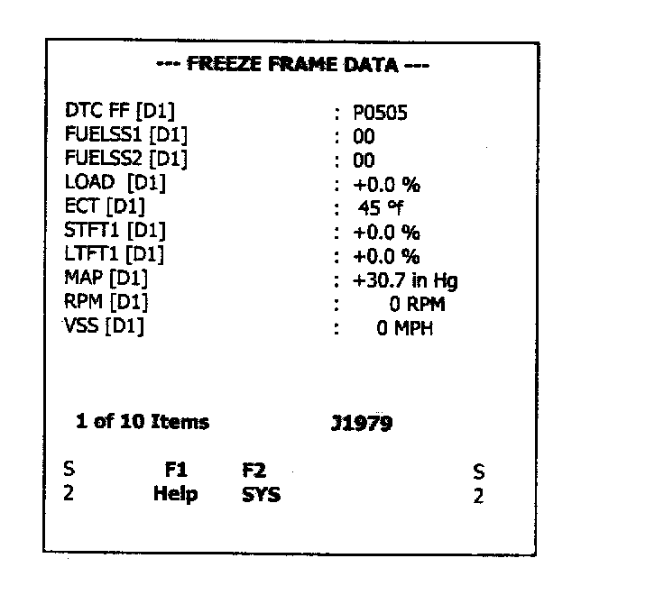

2. Powertrain Freeze Frame

MODE 2 - Request Powertrain Freeze Frame Data
Functional Description - The purpose of this mode is to allow access to emission-related data values, which will be reported at the time the fault matured (MIL ON). The request for information includes a parameter identification (PID) value that indicates to the on-board system the specific information requested. The on-board module will respond to this request by transmitting the requested data value stored by the system. All data values returned for sensor readings will be "actual" readings, not default or substitute values used by the system because of a fault with that sensor. This mode also allows expansion to meet manufacture-specific requirements not necessarily related to the required freeze frame, and not necessarily containing the same data values as the required freeze frame.
NOTE4:
1 Trip failures are not stored in the J1979 Mode 2 Freeze Frame, only matured faults (DTCs). However, the data stored in J1979 Mode 2 Freeze Frame will be from the first occurrence of the first emission related failure, unless overwritten by a higher priority (different) DTC.